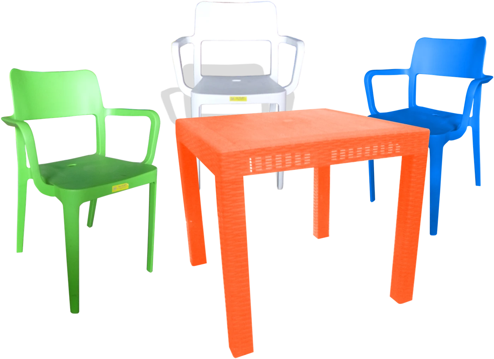
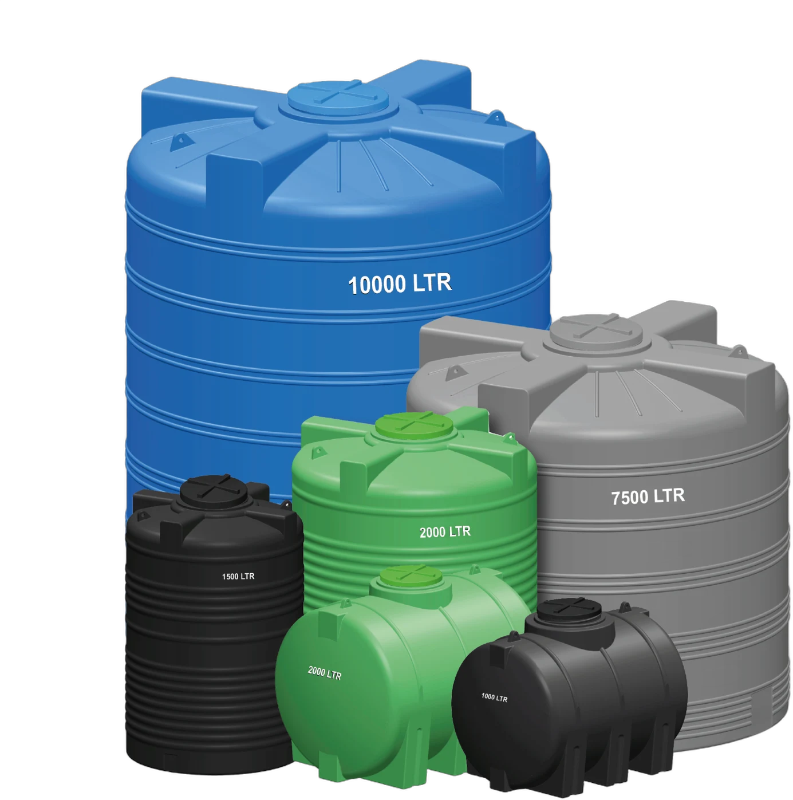
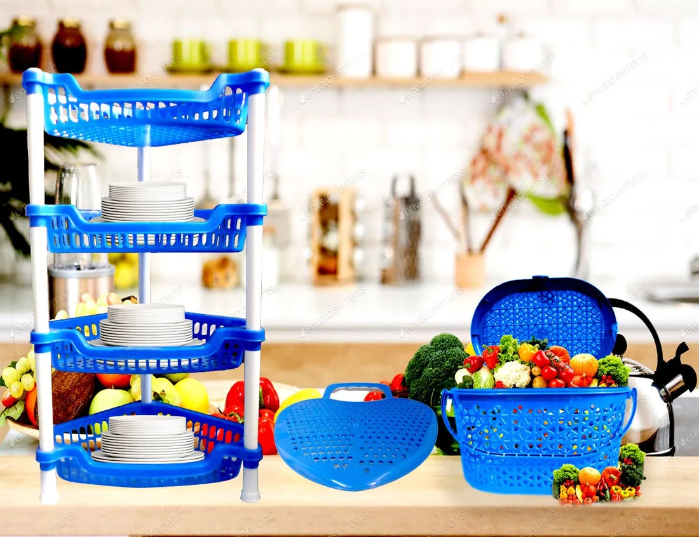
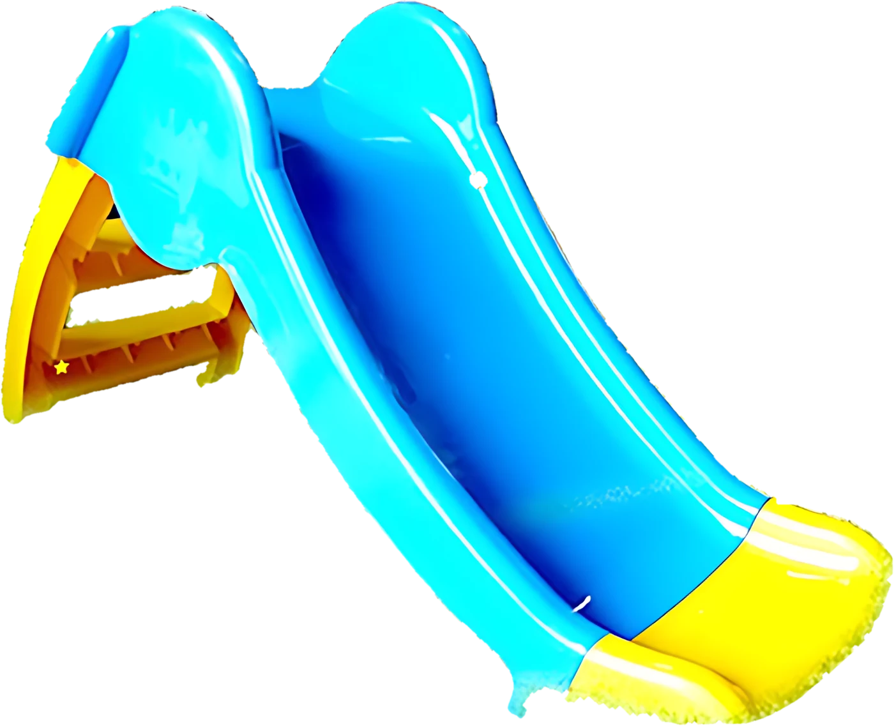
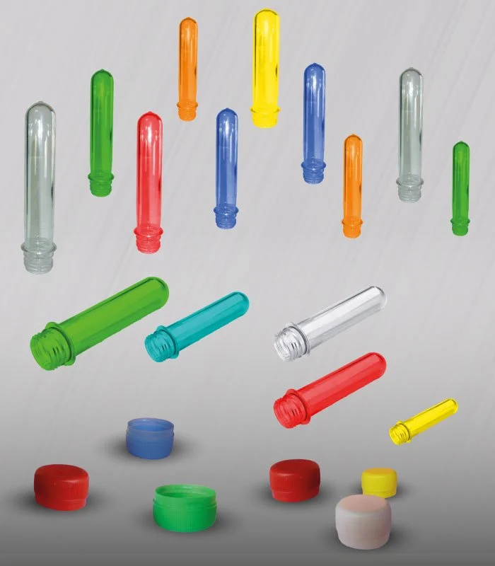
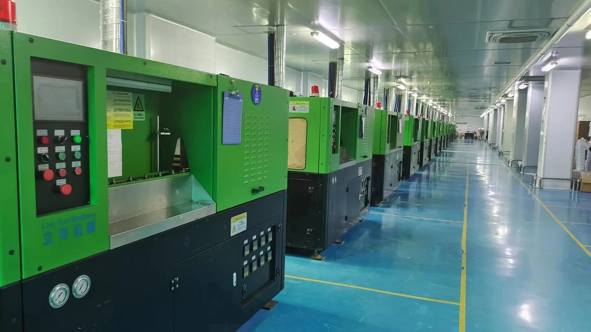
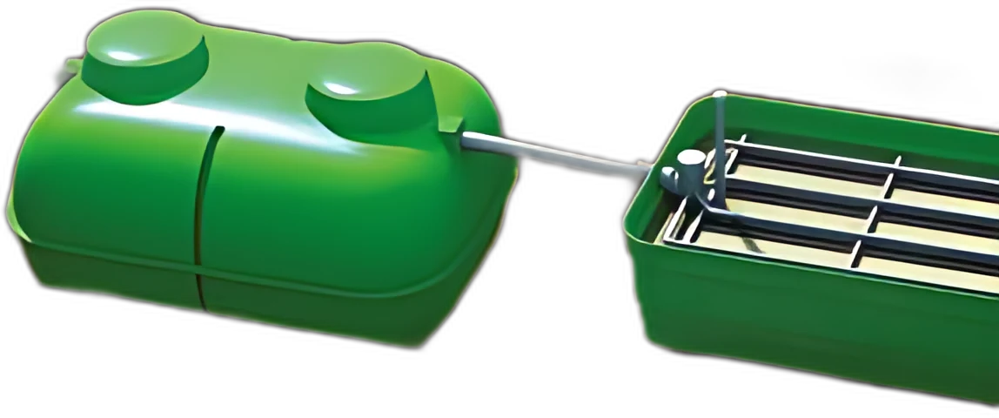
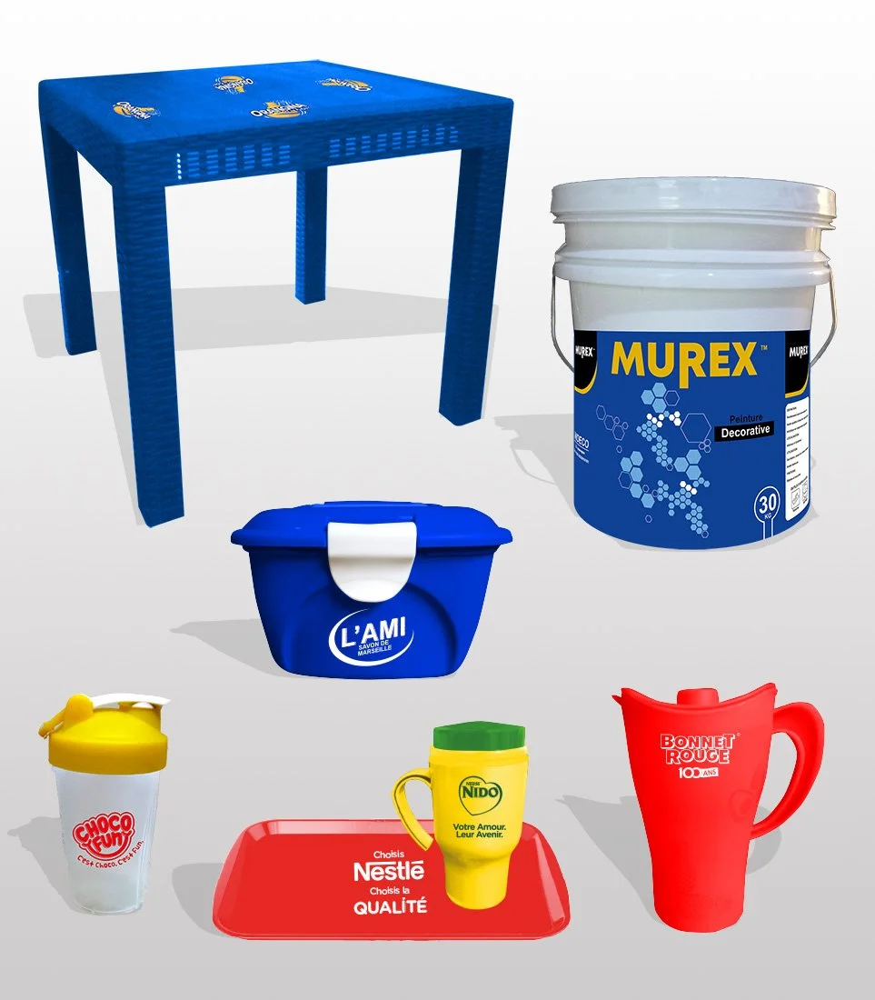

CommanderTaj Plast fabrique et distribue des articles de ménage et industriels en plastique, pour les familles, les commerces et les entreprises, en Côte d’Ivoire et à l’international.

Du mobilier pour la maison et le maquis aux cuves pour le chantier, tout sort de nos ateliers de Koumassi.
Table Confort, chaises Ibiza, armoires 1 à 4 niveaux, tiroirs 3 et 4 niveaux.
02AssainissementCuves de stockage, fosses septiques, puits d’infiltration, poubelles et tube orange.

03Articles de ménageCuisine, rangement, seaux, bassines et poubelles à pédale.

04Articles pour enfantsToboggans, chaises et armoires enfant aux couleurs vives.

05Emballage et industriePréformes, bouchons, bouteilles PET, bidons et emballages plastiques.

Le toboggan enfant 2 marches Taj Plast, orange et vert, en point de vente pour les vacances.

TAJ PLAST est une société spécialisée dans la fabrication et la distribution d’articles industriels et de ménage en plastique. TAJ PLAST assure une meilleure qualité de produits tant sur le marché national qu’international.
Nous disposons d’un savoir-faire acquis depuis notre création et utilisons les dernières innovations technologiques dans nos processus de fabrication. Plusieurs entreprises, sur le plan national et international, nous renouvellent sans cesse leur confiance.
L’assainissement autonome est essentiel pour traiter les eaux usées domestiques en l’absence de raccordement au réseau public. Deux éléments clés de ce système sont la fosse septique et le puits d’infiltration.

Fosses septiques et puits d’infiltration, pour les maisons non raccordées au réseau.
Cuves verticales et horizontales sous la marque Coraxel.

Votre logo sur nos articles, pour vos opérations et vos clients.
Trier, recycler, sensibiliser : sans tri, nos déchets n’ont pas de seconde vie. Nous éduquons jeunes et adultes aux petits gestes qui changent tout.
Particulier, revendeur ou entreprise : écrivez-nous, nous vous répondons.
Écrire sur WhatsApp